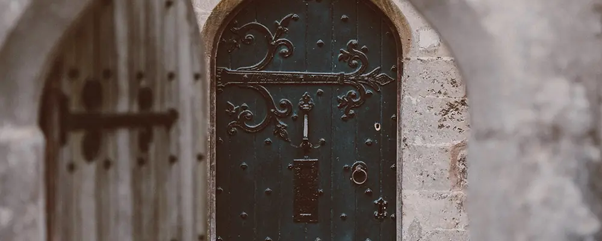
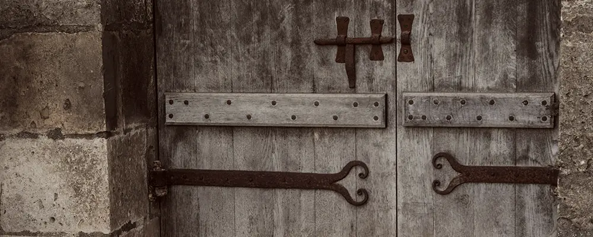
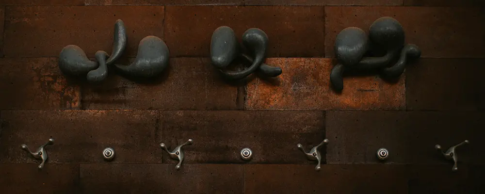
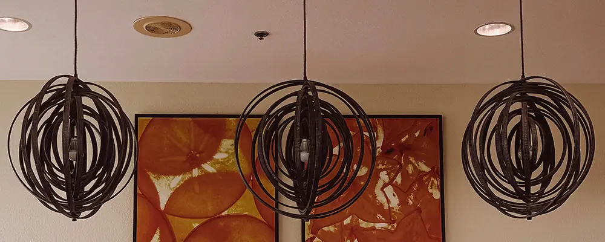
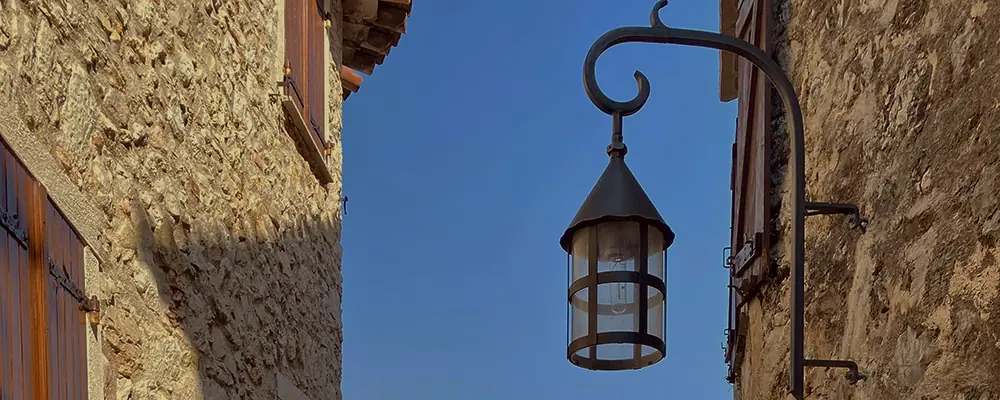
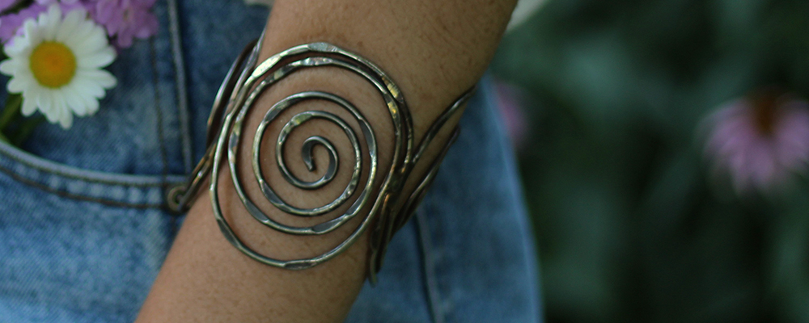
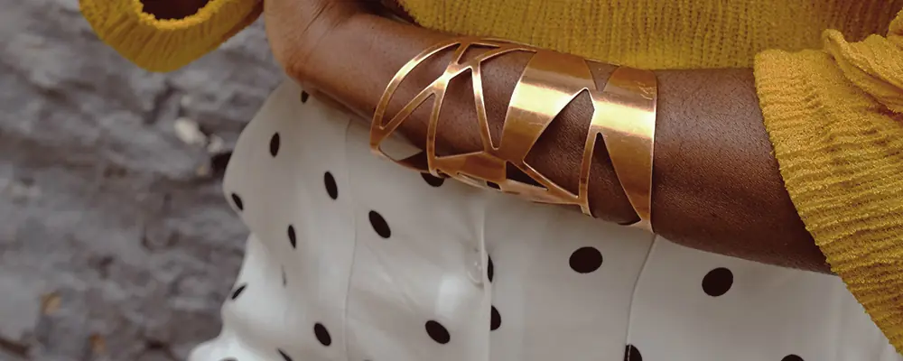

Birgittas vackra smidesverk

Detaljrika gångjärn och beslag smidda till en ladugårdsomvandling i rustik stil.

Gångjärn producerade åt kyrkoförsamlingen vid renovering av Tolg G:a Kyrka.

Enkelt, rustikt vedställ för praktiska och dekorativa syften.

Både de tre järnkonstverken samt väggkrokarna är gjutna av Birgitta.

Lampor skapade till anrik arkitektfirma belägen i Växjö.

Lykta som beställdes av privat kund som bor i ett äldre samhälle på svenska östkusten.

Rustikt armband som både designats och producerats av Birgitta.

Geometriskt armband i plåt designat i samråd med beställande kund.